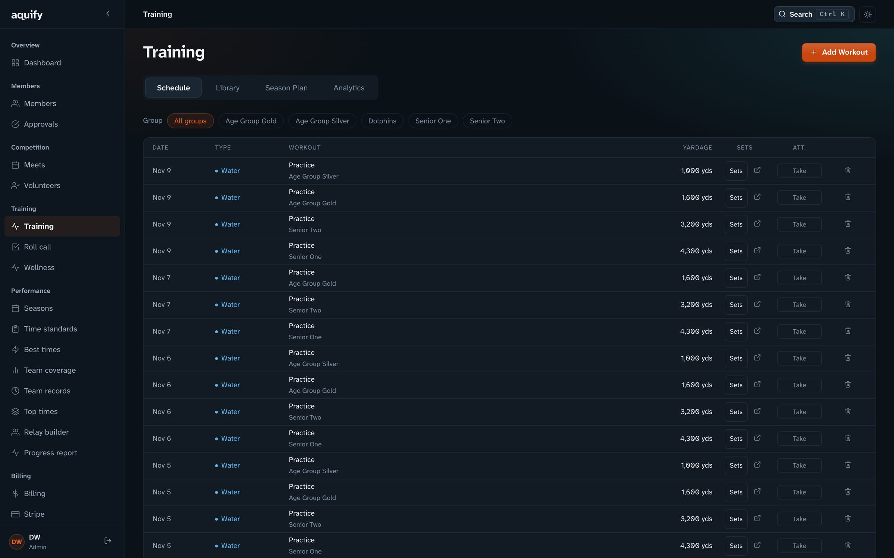
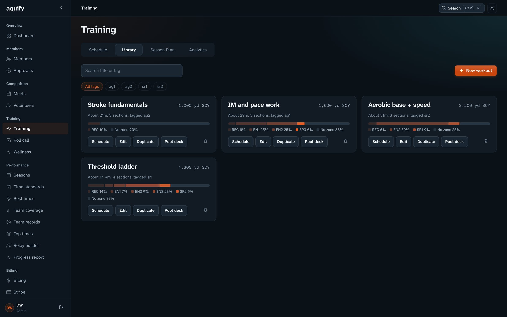
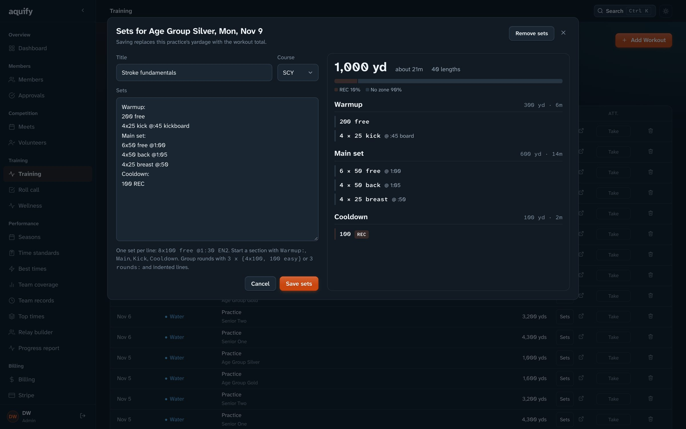
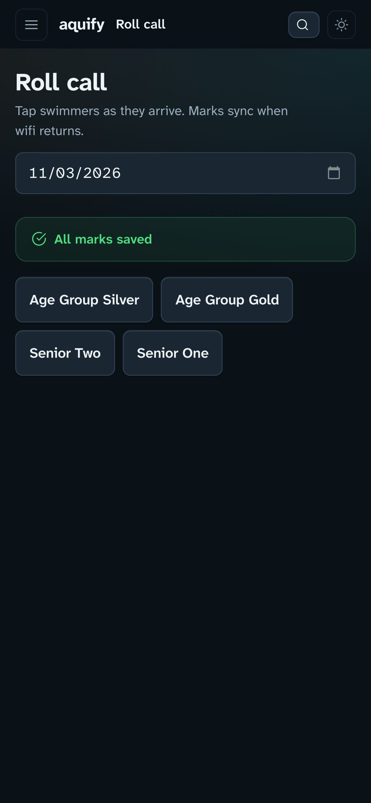
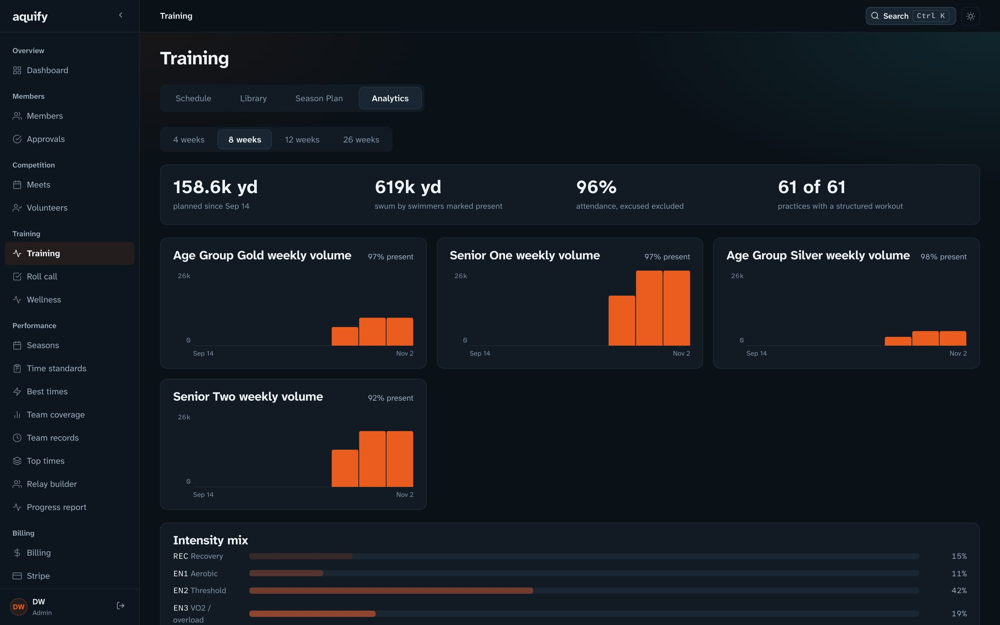
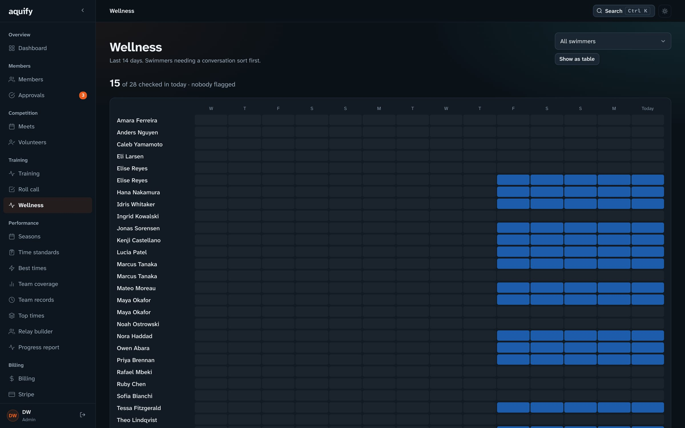

Write the workout once.
Plan it, assign it, run it on deck, and see who showed up.

Every group’s practice, one listFilter to a single group.
Sets already attachedOpen the workout from the schedule.
Attendance a tap awayTake it from the same row.
Write the set. Assign it to a group. Open it on deck. Mark who showed up.
Type it like you’d write it on the whiteboard.
aquify reads the sets, rest, zones and equipment, then adds up the yardage for you.
What the coach types
What the swimmers get
Warmup800 yd
Main set1,500 yd
Cooldown200 yd
0yards, 0 lengths
Keep the sets that work.
Save any workout as a templateMark each set from easy recovery to all-out sprint, and see the mix at a glance.
Assign it to a practiceEach practice gets its own copy, so changing Tuesday never changes the template.
Edit the sets in placeChange a send-off or add a round and the yardage adds itself up again.


Made for the pool deck.
The workout, big enough to read from the waterOpen any practice in deck view. Sets, send-offs and zones are set large for a phone held at arm’s length.
Roll call that survives bad wifiTap swimmers as they arrive. Marks save on the phone and sync when the connection returns.



Weekly yardage, attendance and intensity, for every group.

Know who needs a word.
Swimmers, or their parents, answer a short check-in about sleep, soreness, energy, stress and mood. You see a grid of the last two weeks and who has been feeling off.
- Takes about twenty seconds to fill in.
- Coaches and admins see the whole club. Families see only their own swimmer.
- Season planSplit the season into base, build and taper, and set a weekly yardage goal for each group.
- AttendanceSee what share of practices each group shows up for. Excused absences don’t count against them.
- Practice by groupParents and swimmers see the team-wide practices and their own group’s, nothing else.
- GoalsSet a time goal with a swimmer and watch the gap close as they race.
- Relay builderSuggests the fastest four swimmers for a relay from their best times.
Ready when your club is.
We’re opening aquify to clubs in order. Leave your email and we’ll tell you when it’s your turn.
Join the waitlist